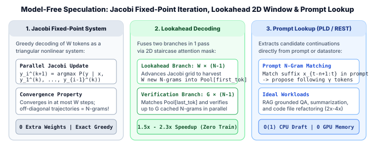

3. Model-Free Speculation: Jacobi Fixed-Point Iteration, Lookahead Decoding & Prompt Lookup (PLD)
What if you need to accelerate a newly released foundation model immediately in production, without a compatible small draft model and without spending GPU hours training Medusa or EAGLE heads? Model-free (training-free) speculative decoding achieves $1.5\times\text{--}3.5\times$ latency reductions using zero additional weights and zero fine-tuning.
In this chapter we derive three foundational model-free paradigms: (1) Jacobi Fixed-Point Decoding (Santilli et al., ACL 2023), which casts autoregressive greedy decoding as a lower-triangular system of nonlinear equations; (2) Lookahead Decoding (Fu et al., ICML 2024), which harvests off-diagonal Jacobi trajectories into an $N$-gram pool verified in the same forward pass; and (3) Prompt Lookup Decoding (PLD) & Retrieval-Based Speculation (REST), which mine candidate spans directly from the input prompt or a suffix-array datastore.

1. Autoregressive Greedy Decoding as a Triangular Nonlinear System
Given a prompt $x = (x_1, \dots, x_t)$, deterministic greedy decoding of the next $W$ tokens $Y^\star = (y_1^\star, y_2^\star, \dots, y_W^\star)$ is defined sequentially by:
Notice that this is a strictly lower-triangular system of $W$ nonlinear equations in $W$ unknowns $(y_1, \dots, y_W)$:
Standard autoregressive decoding solves this system via forward substitution (Gauss–Seidel) in exactly $W$ sequential passes. Instead, Jacobi iteration initializes an arbitrary guess vector $Y^{(0)} = (y_1^{(0)}, \dots, y_W^{(0)})$ (for instance, random tokens or repeated tokens from the prompt) and updates all $W$ positions in parallel inside a single causal Transformer forward pass:
Because $y_1^{(1)} = f_1(\varnothing) = y_1^\star$ is guaranteed to be exact after step $k=1$, and by induction $y_{1:k}^{(k)} = y_{1:k}^\star$ after step $k$, Jacobi iteration never takes more than $W$ passes to converge to the exact greedy sequence $Y^\star$. Better yet, whenever $y_i^{(k)}$ happens to match $y_i^\star$ ahead of schedule (e.g., predictable function words or idioms like "of the"), position $i+1$ receives the true context a step early and locks into its fixed point on the very next pass!
2. Lookahead Decoding: Turning Jacobi Trajectories into an $N$-Gram Pool
Pure 1D Jacobi decoding only achieves modest speedups ($\sim 1.15\times$) on natural language because random initial guesses $y_i^{(0)}$ rarely match $y_i^\star$ before the wavefront reaches position $i$, and every un-converged off-diagonal prediction $y_i^{(k)}$ is immediately overwritten and discarded.
Lookahead Decoding (Fu et al., ICML 2024) realizes that even when an off-diagonal Jacobi token $y_i^{(k)}$ is conditioned on an unverified prefix, the multi-step trajectory $\big(y_i^{(k-N+2)}, \dots, y_{i+N-2}^{(k)}\big)$ forms a valid conditional $N$-gram generated by the target model itself! Lookahead Decoding captures and reuses these trajectories by splitting each target forward pass into two parallel branches sharing a single custom attention mask:
- The 2D Lookahead Branch ($W \times (N-1)$ tokens): Maintains a 2D grid of width $W$ (lookahead window size, e.g., $W=5$) and depth $N-1$ ($N$-gram size minus $1$, e.g., $N=5 \implies N-1=4$). At each step, row $d \in \{1, \dots, N-1\}$ takes the outputs from row $d-1$ of the previous step, advancing $W$ parallel $N$-gram trajectories by one token and inserting all $W$ newly completed $N$-grams into a hash table $\text{Pool}[g_1]$ keyed by their first token $g_1$.
- The Verification Branch ($G \times (N-1)$ tokens): Queries $\text{Pool}[x_t]$ using the last accepted token $x_t$ to retrieve up to $G$ cached $N$-grams starting with $x_t$. All $G$ candidate continuations of length $N-1$ are appended to the input and verified in parallel via tree/block-diagonal attention in the exact same forward pass as the Lookahead Branch.
3. Prompt Lookup Decoding (PLD) & Retrieval-Based Speculation (REST)
In many enterprise LLM workloads—such as RAG question answering, document summarization, data extraction, and code refactoring ( Cursor / Copilot edits )—a large fraction of output tokens are copied or lightly adapted spans from the input prompt $x_{1:t}$.
Prompt Lookup Decoding (PLD; Saxena, 2023) replaces the draft model with a simple string/token suffix matcher over the current context $x_{1:t}$:
- Take the last $n$ generated tokens $s = x_{t-n+1 : t}$ (trying $n = 3$ down to $n = 1$).
- Scan the prompt and previously generated text $x_{1 : t-1}$ for the most recent occurrence of suffix $s$ at index $j$ (so $x_{j-n+1 : j} = s$).
- Propose the $\gamma$ tokens immediately following $j$ in the prompt, $\hat x_{t+1 : t+\gamma} = x_{j+1 : j+\gamma}$, and verify them in one target forward pass!
REST (Retrieval-Based Speculative Decoding; He et al., NAACL 2024) generalizes PLD beyond the current prompt by indexing a precomputed code or text corpus (e.g., The Stack or Wikipedia) into a fast Suffix Array / Suffix Automaton in CPU RAM, retrieving top-$k$ matching continuations in $< 0.5\text{ ms}$ and verifying them with tree attention.
4. Worked Step-by-Step Trace: Lookahead $(W=3, N=3)$ & PLD
Suppose a code-editing prompt contains "def compute_norm(vec): return torch.linalg.norm(vec)" and the model has just generated "out = compute_". Compare how PLD and Lookahead Decoding draft the continuation:
| Method | Trigger / Suffix Match | Proposed Draft Tokens ($\gamma = 4$) | Extra GPU VRAM | Accepted Tokens in 1 Target Pass |
|---|---|---|---|---|
| Prompt Lookup (PLD) | Matches suffix "compute_" at prompt token index $2$ |
["norm", "(", "vec", ")"] (copied from prompt indices $3\dots 6$) |
$0\text{ MB}$ | All $4$ accepted + $1$ bonus token $=$ $5$ tokens |
| Lookahead ($W=3, N=3$) | Queries $N$-gram pool for key "compute_" populated during prior Jacobi steps |
Verifies cached 3-gram ["compute_", "norm", "("] while advancing $3\times 2$ lookahead grid |
$< 5\text{ MB}$ ($N$-gram dict) | $2$ verified + $1$ bonus token $=$ $3$ tokens |
| 1D Jacobi Decoding | Initializes window with ["(", "x", ")"] |
Step 1 resolves "norm"; Step 2 resolves "(" |
$0\text{ MB}$ | $1\text{--}2$ tokens per pass |
5. Reference Python Implementation: Prompt Lookup Decoding & Lookahead $N$-Gram Pool
from collections import defaultdict
from typing import Sequence
def prompt_lookup_draft(
token_ids: Sequence[int],
max_ngram_size: int = 3,
num_pred_tokens: int = 5,
) -> list[int]:
"""
Prompt Lookup Decoding (PLD): searches backwards through token_ids[:-1]
for the longest matching trailing n-gram (n = max_ngram_size down to 1)
and returns the following `num_pred_tokens` tokens as the speculative draft.
"""
n_total = len(token_ids)
for n in range(min(max_ngram_size, n_total - 1), 0, -1):
suffix = list(token_ids[n_total - n :])
# Search from most recent to oldest in the prefix
for end_idx in range(n_total - 1, n - 1, -1):
if list(token_ids[end_idx - n : end_idx]) == suffix:
start = end_idx
stop = min(end_idx + num_pred_tokens, n_total - 1)
if stop > start:
return list(token_ids[start:stop])
return []
class LookaheadNGramPool:
"""
Stores harvested N-grams from the 2D Jacobi lookahead window keyed by their first token.
"""
def __init__(self, n_gram_size: int = 4, max_candidates_per_key: int = 5):
self.N = n_gram_size
self.G = max_candidates_per_key
self.pool: dict[int, list[tuple[int, ...]]] = defaultdict(list)
def update_from_jacobi_grid(self, rows: list[list[int]]) -> None:
"""
rows: list of (N) rows, each of width W, representing the 2D Jacobi trajectory.
Column w across rows 0..N-1 forms a valid target-generated N-gram.
"""
W = len(rows[0])
for w in range(W):
ngram = tuple(rows[d][w] for d in range(self.N))
first_tok, continuation = ngram[0], ngram[1:]
bucket = self.pool[first_tok]
if continuation not in bucket:
if len(bucket) >= self.G:
bucket.pop(0)
bucket.append(continuation)
def get_verification_branches(self, last_accepted_token: int) -> list[tuple[int, ...]]:
return list(self.pool.get(last_accepted_token, []))
if __name__ == "__main__":
# 1. Test Prompt Lookup Decoding (PLD)
vocab = ["def", "compute_", "norm", "(", "vec", "):", "return", "out", "=", "compute_"]
tok_to_id = {w: i for i, w in enumerate(dict.fromkeys(vocab))}
id_to_tok = {i: w for w, i in tok_to_id.items()}
seq_ids = [tok_to_id[w] for w in vocab]
draft_ids = prompt_lookup_draft(seq_ids, max_ngram_size=3, num_pred_tokens=4)
print("PLD Drafted Tokens:", [id_to_tok[i] for i in draft_ids])
# 2. Test Lookahead N-Gram Pool harvesting
pool = LookaheadNGramPool(n_gram_size=3, max_candidates_per_key=4)
jacobi_rows = [
[tok_to_id["compute_"], tok_to_id["norm"]],
[tok_to_id["norm"], tok_to_id["("]],
[tok_to_id["("], tok_to_id["vec"]],
]
pool.update_from_jacobi_grid(jacobi_rows)
branches = pool.get_verification_branches(tok_to_id["compute_"])
print("Lookahead Pool Branches for 'compute_':", [[id_to_tok[i] for i in b] for b in branches])6. Primary References
- Andrea Santilli et al., Accelerating Transformer Inference for Translation via Parallel Decoding (ACL 2023).
- Yichao Fu, Peter Bailis, Ion Stoica, and Hao Zhang, Break the Sequential Dependency of LLM Inference Using Lookahead Decoding (ICML 2024).
- Apoorv Saxena, Prompt Lookup Decoding (2023; integrated into Hugging Face
transformersviaprompt_lookup_num_tokens). - Zhenyu He et al., REST: Retrieval-Based Speculative Decoding (NAACL 2024).